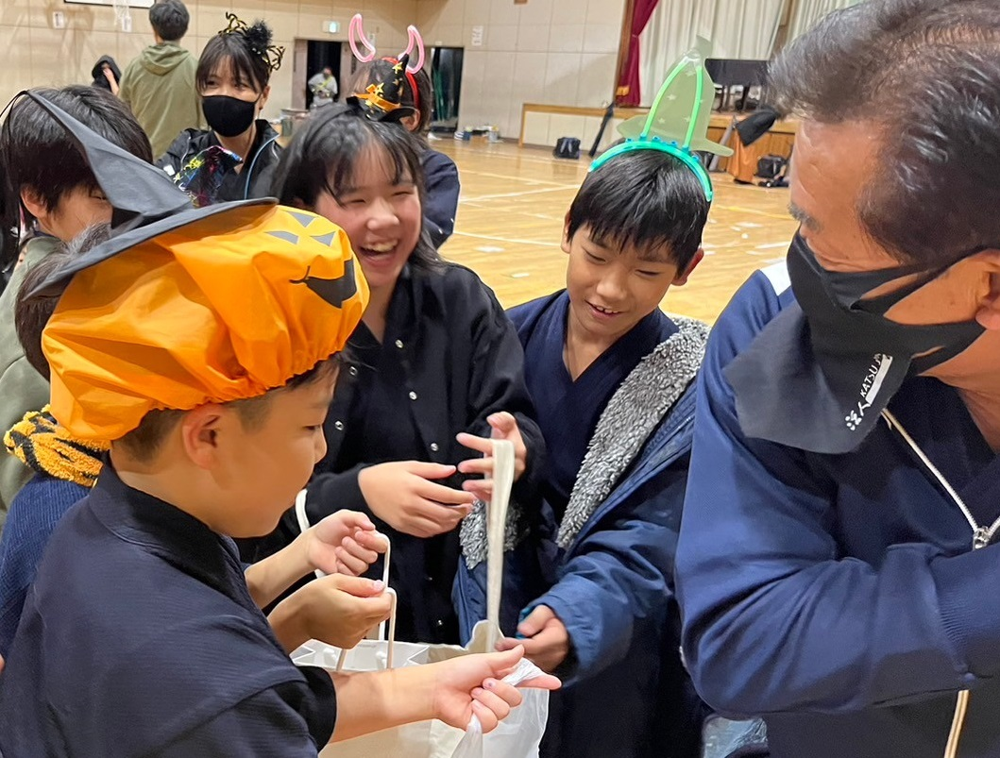

活動内容
2024年度
04月06日 穂高剣道スポーツ少年団交流錬成大会(小)
04月13日 川中島合戦剣道大会 三太刀杯(小、中)
予定 04月27日 剣道体験会
予定 04月28日 剣道体験会
2023年度
04月01日 穂高剣道スポーツ少年団交流剣道練成会
04月08日 川中島古戦場三太刀杯
04月23日 剣道体験会
04月30日 剣道体験会
05月20日 松代藩文武学校杯争奪小学生選抜剣道大会(練成会)
05月21日 松代藩文武学校杯争奪小学生選抜剣道大会
07月09日 長野県小学生剣道錬成大会
07月16日 新潟 海の日越後少年剣道錬成大会
07月17日 長野南地区剣道大会
07月22日 東京 全日本少年少女剣道錬成大会
08月11日 日大記念大会
08月12日 信大大会
08月19日 レク 新入団員歓迎会
09月02日 合宿
09月16日 中野市少年剣道練成会
09月17日 長野市柔剣道大会
09月23日 新潟 上越少年剣道練成会
10月08日 真田まつり
10月09日 権堂大会
10月28日 レク ハロウィン
11月03日 更埴大会 (小、中、青)
11月05日 佐久っこ大会 (小、中)
11月23日 小坂憲次杯 (小、中、青)
12月03日 みすずライオンズ杯争奪長野少年剣道大会 (小、中)
12月17日 やまびこ大会 (小、中)
12月22日 部内大会 (小、中)
01月07日 レク 稽古始め
02月03日 レク 節分豆まき
02月24日 湯けむり少年剣道大会 (小、中)
03月02日 山梨 森島健男旗争奪 東日本選抜少年剣道大会 (小、中)
03月03日 山梨 森島健男旗争奪 東日本選抜少年剣道大会(練成会) (小、中)
03月10日 富山 斎籐弥九郎顕彰碑建立記念少年剣道大会(小)
03月24日 卒業生を送る会
03月31日 茨城 全国選抜少年剣道大会(小)
稽古以外のイベントも楽しく活動しています
| 10月28日 ハロウィン |
|  |
| |
| 01月07日 稽古始め |
 |
ホームへ